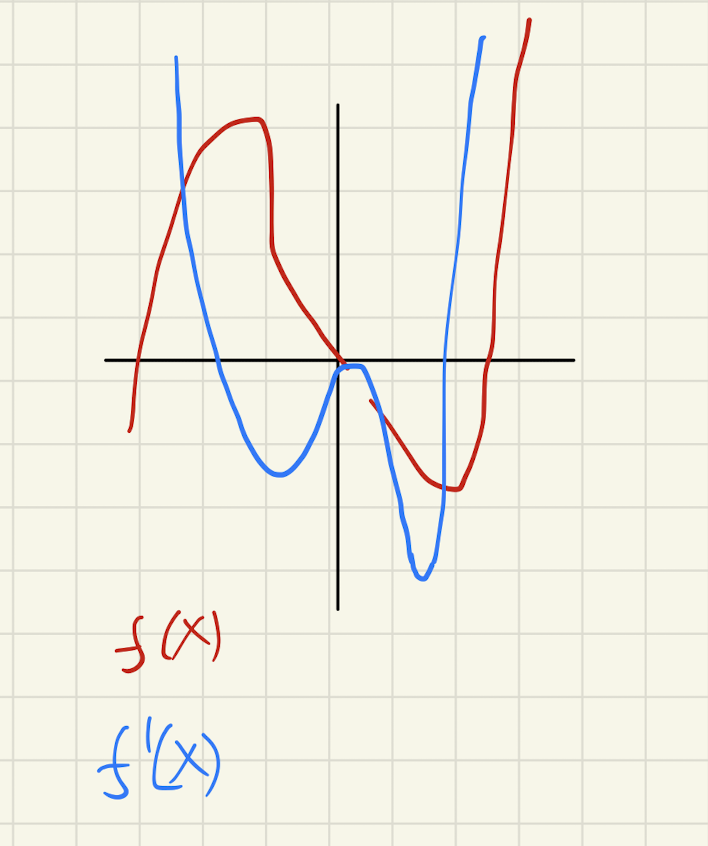

Backlinks
1 Plane Tangent to a Surface
Here's a surface:
\begin{equation} x^2 - 3y^2 + z^2 = 7 \end{equation}
1.1 Graph It!

1.2 Find the Equation of the Plane Tangent to it at \((1,1,3)\)
We will first establish an equation for the statement w.r.t. \(z\):
\begin{align} &x^2 - 3y^2 +z^2 = 7 \\ \Rightarrow &z^2 = 7-x^2 + 3y^2 \\ \Rightarrow &z = \sqrt{7-x^2 + 3y^2} \end{align}Then, we find the components of the slope in each of the dimensions.
\begin{align} \frac{\partial}{\partial x} \sqrt{7-x^2 + 3y^2} \\ \Rightarrow \frac{-2x}{2\sqrt{7-x^2 + 3y^2}} \\ \Rightarrow \frac{-x}{\sqrt{7-x^2 + 3y^2}} \end{align} \begin{align} \frac{\partial}{\partial y} \sqrt{7-x^2 + 3y^2} \\ \Rightarrow \frac{6y}{2\sqrt{7-x^2 + 3y^2}} \\ \Rightarrow \frac{3y}{\sqrt{7-x^2 + 3y^2}} \end{align}Therefore, at point \((1,1,3)\), the gradient is as follows
\begin{equation} \begin{bmatrix} \frac{-1}{3} \\ 1 \end{bmatrix} \end{equation}The basic equation for the plane, then, would be:
\begin{equation} z = \frac{-1}{3}x+1y + b \end{equation}As the plane is tangent to \((1,1,3)\), we will supply these values and calculate the necessary constant.
\begin{align} &3 = -\frac{1}{3}+1 + b \\ \Rightarrow &3 = \frac{2}{3} + b \\ \Rightarrow &b = \frac{7}{3} \end{align}1.3 Graph the surface and its tangent plane!

2 Optimization Functions
2.1 \(f(x) = x^4 - 9x^2\)

We first will figure the first and seconds derivatives of this function to check and verify its critical points.
\begin{equation} f'(x) = 4x^3 - 18x \end{equation} \begin{equation} f''(x) = 12x^2 - 18 \end{equation}To figure the critical points (maxima, minima, inflection), we first solve for the points in which \(f'(x)\) is \(0\).
\begin{align} &0 = 4x^3 - 18x \\ \Rightarrow & 0 = x(4x^2 - 18) \\ \Rightarrow & x = \{0, \frac{3\sqrt{2}}{2}, \frac{-3\sqrt{2}}{2}\} \end{align}We then figure the second derivatives of the function at these two points.
\begin{equation} f''(\{0, \frac{3\sqrt{2}}{2}, \frac{-3\sqrt{2}}{2}\}) = \{-18, 36, 36 \} \end{equation}At the first critical point, the second derivative is negative. By the second-derivative test, therefore, this point serves as a local maxima is the function, after that point, would begin to exhibit a negative slope and then proceed to decrease.
At the second and third critical points, the second derivative is positive. By the second-derivative test, therefore, this point serves as local minima as the function, after that point, would begin to exhibit a positive slope and then proceed to increase.
The coordinates of the critical points are, therefore, as follows:
| Type | x | y |
|---|---|---|
| maxima | 0 | 0 |
| minima | 3sqrt(2)/2 | -20.25 |
| minima | -3sqrt(2)/2 | -20.25 |
2.2 \(f(x) = x^5 - x^4 - 6x^3\)

We first will figure the first and seconds derivatives of this function to check and verify its critical points.
\begin{equation} f'(x) = 5x^4 - 4x^3 - 18x^2 \end{equation} \begin{equation} f''(x) = 20x^3 - 12x^2 - 36x \end{equation}To figure the critical points (maxima, minima, inflection), we first solve for the points in which \(f'(x)\) is \(0\).
\begin{align} &0 = 5x^4 - 4x^3 - 18x^2 \\ \Rightarrow &0 = x^2 (5x^2 - 4x^1 - 18) \\ \Rightarrow &x = \{0, \frac{4 + \sqrt{376}}{10}, \frac{4 - \sqrt{376}}{10}\} \end{align}We then figure the second derivatives of the function at these two points.
\begin{equation} f''(\{0, \frac{4 + \sqrt{376}}{10}, \frac{4 - \sqrt{376}}{10}\}) \approx \{0, 106.09, -45.93\} \end{equation}At the first critical point, the second derivative is zero. By the second-derivative test, this would mean that that point is an inflection point — the function changes increasing/decreasing status at that point..
At the second critical point, the second derivative is positive. By the second-derivative test, therefore, this point serves as local minima as the function, after that point, would begin to exhibit a positive slope and then proceed to increase.
At the third critical point, the second derivative is negative. By the second-derivative test, therefore, this point serves as a local maxima is the function, after that point, would begin to exhibit a negative slope and then proceed to decrease.
The coordinates of the critical points are, therefore, as follows:
| Type | x | y |
|---|---|---|
| inflection | 0 | 0 |
| minima | (4+sqrt(346))/10 | -36.7 |
| maxima | (4-sqrt(346))/10 | 7.63 |